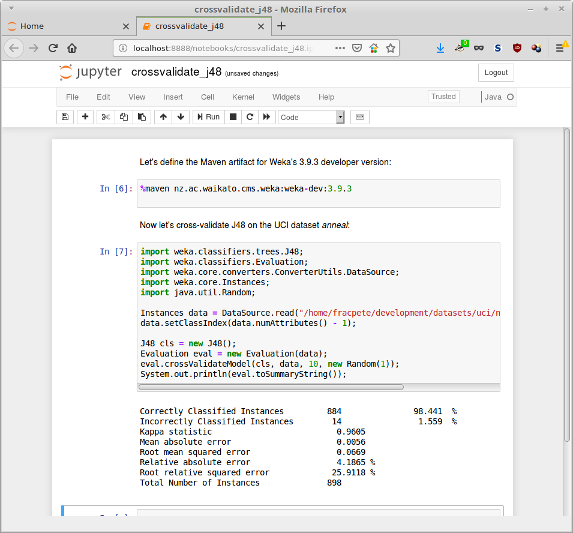

Jupyter notebooks
Jupyter notebooks are extremely popular in the Python world, simply because it is great to combine documentation and code in a visually appealing way. Makes it an ideal tool for teaching!
A recent post on the MOA blog, demonstrated the IJava kernel for executing Java scripts. The kernel relies on the Java JDK 9+ feature called JShell, which allows executing Java code without compiling it first.
Rather than using mybinder.org, I was intrigued how easy it would be to run it on ones local machine. As it turns out, extremely easy!
Installation
Here is what I did on my Linux Mint 18.2 machine:
-
created a directory called weka-notebooks
mkdir weka-notebooks
-
changed into the directory and created a Python virtual environment:
cd weka-notebooks virtualenv -p /usr/bin/python3.5 venv
-
installed Jupyter notebooks and its dependencies:
venv/bin/pip install jupyter
-
then I downloaded the latest IJava release (at time of writing, this was 1.20) into this directory
-
unzipped the IJava archive:
unzip -q ijava*.zip
-
and installed the Java kernel into my virtual environment, using the IJava installer:
venv/bin/python install.py --sys-prefix
-
after that, I fired up Jupyter using:
venv/bin/jupyter-notebook
-
now you can create new notebooks!
Example
The following example cross-validates J48 on the UCI dataset anneal (you can download the notebook for the developer version of Weka and the stable 3.8 version):

Comments
Comments powered by Disqus